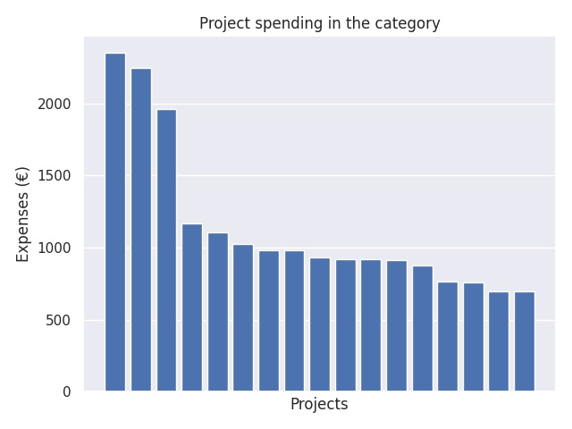

Valmistelevat vierailut ERASMUS + yleissivistävälle koulutukselle 2018 (2. hakukierros)
Category summary
1.14K spent on average
2.35K highest spending

Reports in the category
Jokioisten kunta
Project name: Gladesmore Commynity School
2.35K spent
Vesannon kunta/ Vesannon lukio
Project name: IES Sofía Casanova
2.24K spent
Antinkankaan koulu
Project name: Prof Ihsan Koz Ilkokulu (primary school)
1.96K spent
Oulun kaupunki
Project name: Laanilan lukio
1.17K spent
Nurmeksen kaupunki
Project name: BG/BRG Klosterneuburg
1.1K spent
Uudenkaupungin kaupunki
Project name: Agrupamento de escolas D. Afonso Henriques
1.02K spent
Nurmon yläaste
Project name: Trito Gymnasio
980 spent
Kaarinan kaupunki
Project name: primary school of TAVRONITIS
980 spent
Lappeenrannan kaupunki
Project name: Zespół Szkół Ekonomiczno-Usługowych
935 spent
Lahden kaupunki
Project name: High School St. St. Kiril and Metodii
921 spent
Lempäälän kunta
Project name: Istituto Comprensivo di Cavallermaggiore
920 spent
Nurmijärven kunta
Project name: UC Leuven-Limburg (UCLL)
911 spent
Vaasan lyseon lukio / Vaasan kaupunki
Project name: Humboldt Schule - Kiel
879 spent
Oulun kaupunki
Project name: Agrupamento de Escolas Rio Novo do Principe
764 spent
Tampereen kaupunki
Project name: Grundschule Grunbach
761 spent
Tampereen Kaupunki/ Kämmenniemen päiväkoti
Project name: Tšekki
700 spent
Tampereen kaupunki
Project name: Mateřská škola nad Parkem
700 spent